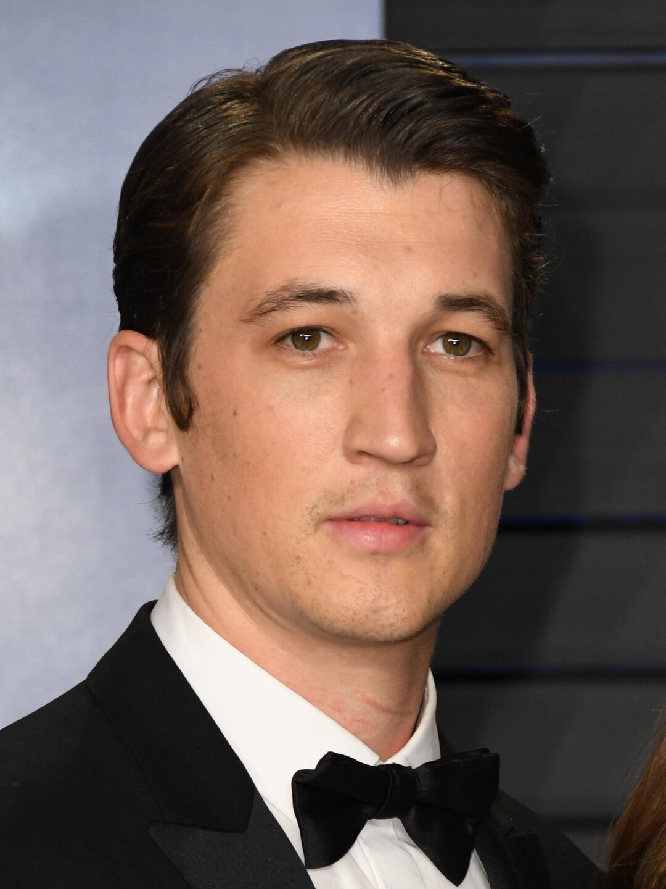
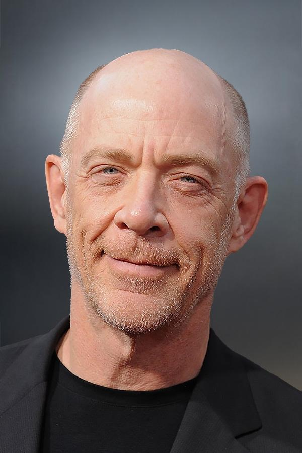
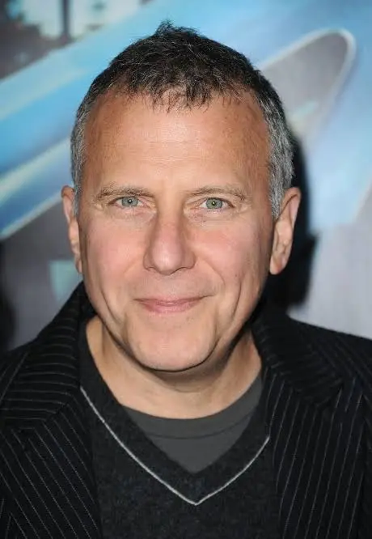

"Одержимость" (англ. Whiplash — букв. кнут, хлыст; работа из-под палки) — музыкальная психологическая драма американского режиссёра Дэмьена Шазелла. Название дано в честь инструментальной пьесы Хэнка Леви. Картина стала профессиональным полнометражным дебютом Шазелла. Премьерой фильма открылась конкурсная программа кинофестиваля «Сандэнс» 16 января 2014 года, на котором картина была удостоена Гран-при жюри. Вскоре после премьеры Sony Pictures приобрела права на международный прокат ленты.
В центре сюжета картины конфликт между исполнителем на ударных инструментах Эндрю Найманом и руководителем джазового коллектива Терренсом Флетчером, известным своим безжалостным нравом. Главные роли исполнили Майлз Теллер и Дж. К. Симмонс. Подавляющим большинством представителей кинопрессы «Одержимость» признана одним из 10 лучших фильмов года. Фильм получил три премии «Оскар», три премии BAFTA, премию Гильдии киноактёров США и «Золотой глобус».
Картина получила преимущественно положительные отзывы от кинокритиков, однако заслужила отдельные замечания в связи со спорной трактовкой образа тирана — руководителя оркестра, воплощённого Симмонсом.

Майлз Теллер Мелисса Бенойст

Джей Кей Симмонс Остин Стоуэлл

Пол Райзер
Кадры из фильма
Полный список произведений из фильма
Snare Liftoff (I Want To Be One Of The Greats) Джонатан Кимбл Симмонс 0:44
Overture (From "Whiplash") Justin Hurwitz 3:19
Too Hip to Retire Tim Simonec 3:04
Whiplash Hank Levy 1:55
Upswingin' Tim Simonec 2:12
Rehearsal Medley: First Nassau Band Rehearsal / Rival Overbrook Chart / Second Nassau Band Rehearsal / Studio Band Eavesdrop / Studio Band Rehearsal After Breakup Tim Simonec 1:52
Caravan John Wasson / Хуан Тизол 9:15
What's Your Name (If You Want The Part, Earn It) Джонатан Кимбл Симмонс 1:31
Practicing Justin Hurwitz 1:43
Invited Justin Hurwitz 0:55
Call from Dad Justin Hurwitz 0:40
Accident Justin Hurwitz 5:22
Hug from Dad Justin Hurwitz 1:15
Drum & Drone Justin Hurwitz 1:34
Carnegie Justin Hurwitz 0:36
Ryan / Breakup Justin Hurwitz 0:31
Drum Battle Justin Hurwitz 2:10
Dismissed Justin Hurwitz 2:47
Good Job (He Was A Beautiful Player) Джонатан Кимбл Симмонс 1:29
Intoit Stan Getz 3:20
No Two Words Николас Брителл, Justin Hurwitz / Justin Hurwitz 1:41
When I Wake Justin Hurwitz / Michael Kurtz 3:51
Casey's Song Justin Hurwitz 1:57
Fletcher's Song in Club Justin Hurwitz 1:29
Keep Me Waiting Dana Williams / Maxwell Drummey 2:20
Fletcher's Song Justin Hurwitz 1:37
When I Wake (feat. Jullanar Gamboa) [Reprise] Justin Hurwitz / Marc Jackson 2:45
Upswingin' (Bad Drumming) Tim Simonec 1:22
Caravan (Bad Drumming) John Wasson / Хуан Тизол 1:41
Fletcher's Song in Club (Hälder Flip) Justin Hurwitz 2:23
Overture (Opiuo Remix) Justin Hurwitz 4:16
Caravan (Timo Garcia Remix) John Wasson / Хуан Тизол 4:24
New York City and You (feat. Murray A Lightburn) Justin Hurwitz / Chris Read 2:40
Came to Win (feat. Konrad OldMoney & Junoflo) Justin Hurwitz 1:49
Fletcher's Song (DOWORK Remix) Justin Hurwitz 2:36
Casey's Song (The Tao of Groove Remix) Justin Hurwitz 3:08